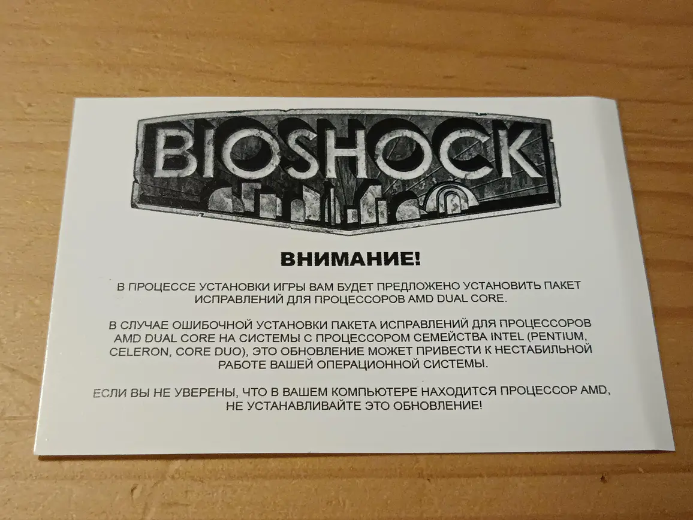

Дикий Запад на заре Dual Core

Перебирал старые диски с играми, наткнулся на примечательный вкладыш у первого Bioshock. Какой-же хаос тогда творился. Ты покупал свежий проц, а игры тупили и тормозили из-за проблем с шедулингом на многоядерку.
А теперь мир чуть проще. Хотя, у нас появились проблемы с шедулингом на P-Cores / E-Cores… И шедулингом на Multi-CCD с 3D V-Cache…
Мда уж, наверно, если бы ещё продавали коробки с играми, таких вкладышей можно было бы найти сейчас даже больше…